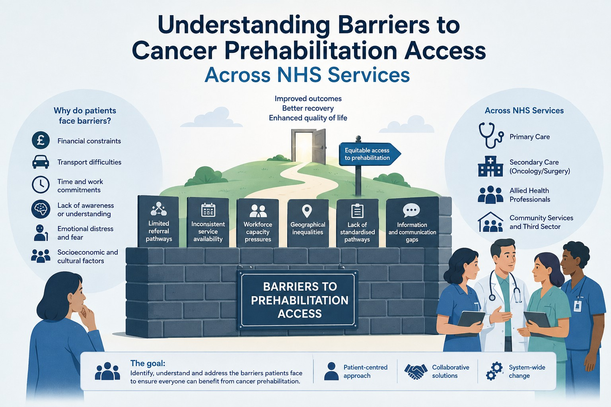

Overview
Cancer prehabilitation, preparing patients physically, nutritionally and psychologically for treatment, was already established across the NHS sites in this programme, but engagement and delivery varied considerably between patients and clinical settings. Some patients never engaged with the service at all, and staff across sites reported inconsistent ways of introducing it. Understanding why required looking at both sides of the interaction: what patients experienced when offered the service, and how clinical teams delivered it day to day.
Study Design
Key Insights
Impact
Findings were synthesised into recommendations that informed service redesign, staff training content and patient-facing engagement materials. These were shared with NHS programme leads and site teams to support more consistent delivery and more accessible communication about the service across sites.
My Role